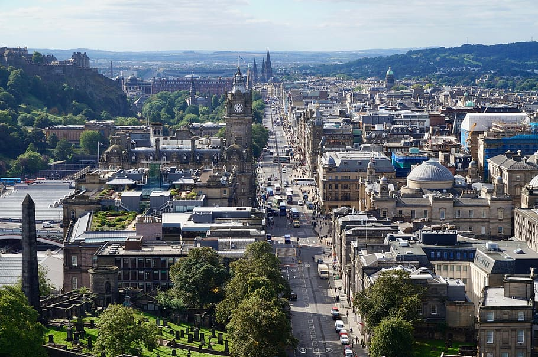
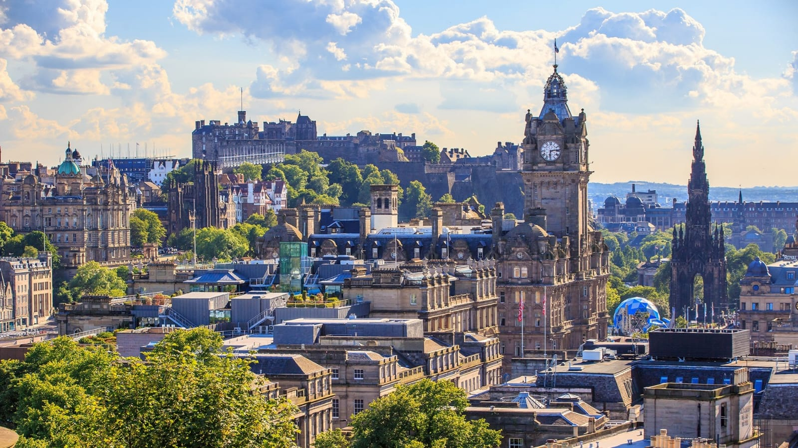
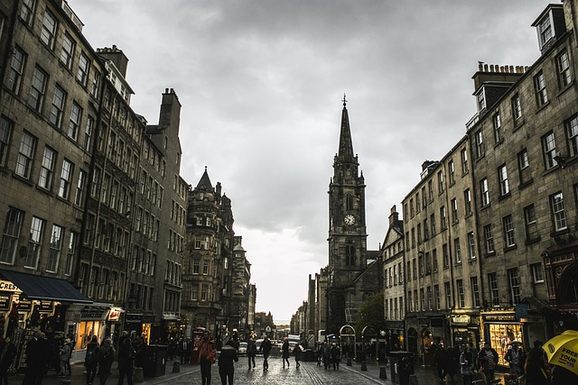
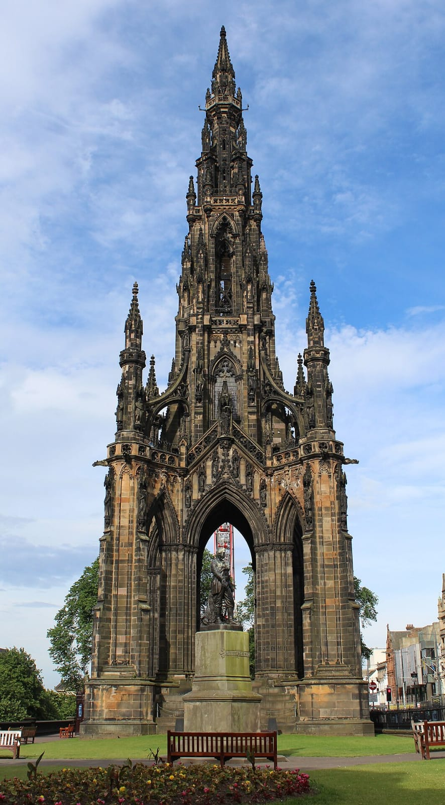
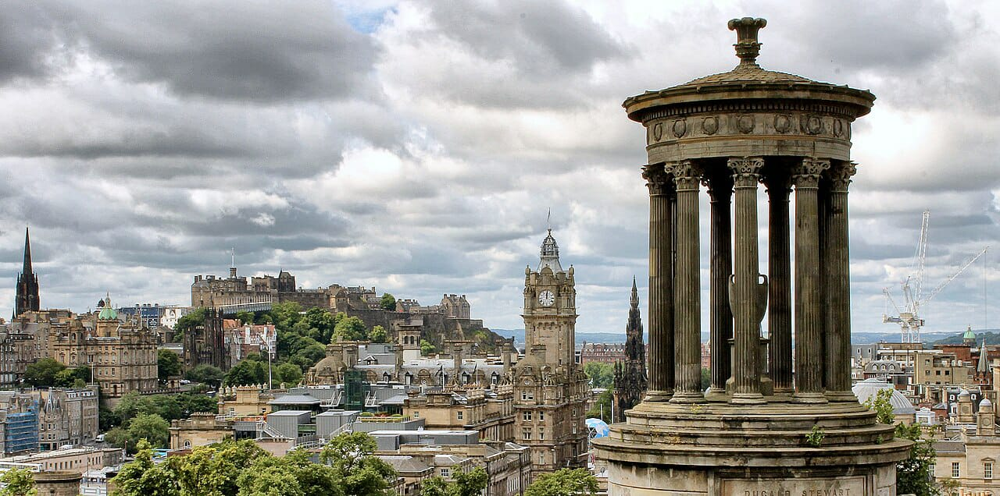
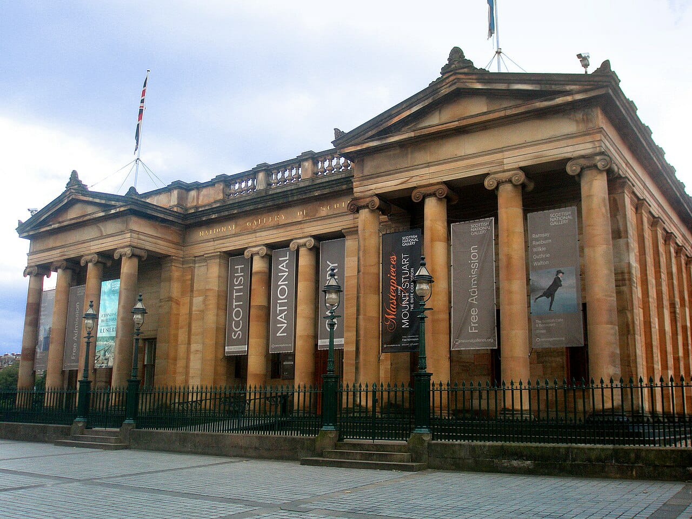

EDINBURGH






Edinburgh is a city of contrasts, with a rich history and culture that is evident in its architecture, museums, and festivals. The city is divided into two main parts: the Old Town and the New Town. The Old Town is a maze of cobbled streets and narrow closes (alleys) that are lined with historic buildings, including Edinburgh Castle, the Palace of Holyroodhouse, and St. Giles' Cathedral. The New Town is a Georgian masterpiece, with elegant streets and squares.
Edinburgh is a popular tourist destination, and there is something for everyone to enjoy. Visitors can explore the city's history and culture, visit its many museums and galleries, enjoy its vibrant nightlife, or simply wander around and soak up the atmosphere.
Here are some of the top things to do in Edinburgh:
Visit Edinburgh Castle:** Edinburgh Castle is one of the most iconic landmarks in Scotland, and it is a must-see for any visitor to the city. The castle is perched on top of Castle Rock, and it offers stunning views of the city. Visitors can tour the castle grounds, visit the Crown Jewels of Scotland, and learn about the castle's rich history.
Explore the Royal Mile:** The Royal Mile is a historic street that runs from Edinburgh Castle to the Palace of Holyroodhouse. The street is lined with shops, restaurants, and pubs, and it is a great place to people-watch and learn about Scottish culture.
Visit the Palace of Holyroodhouse: The Palace of Holyroodhouse is the official residence of the British monarch in Scotland. Visitors can tour the palace state rooms and gardens, and learn about the royal family's history in Scotland.
Visit the National Museum of Scotland: The National Museum of Scotland is one of the most popular museums in the UK. The museum houses a wide range of exhibits, including dinosaur fossils, Egyptian artifacts, and Scottish cultural objects.
Take a walk up Arthur's Seat:Arthur's Seat is an extinct volcano that offers panoramic views of Edinburgh. The walk to the top of Arthur's Seat is challenging, but it is worth it for the views.Enjoy the Edinburgh Festival Fringe:** The Edinburgh Festival Fringe is the world's largest arts festival. The festival takes place every August, and it features a wide range of performances, including comedy, theater, music, and dance.
Edinburgh is a great city to visit at any time of year, but it is especially beautiful during the summer months. The weather is mild, and the city is full of life. If you are planning a trip to Edinburgh, be sure to book your accommodation well in advance, as the city can get very busy during the summer months.
dowload photos
photo1
photo2
photo3
photo4
photo5
photo6